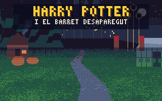

Harry Potter i el Barret Desaparegut
Una aventura de Halloween a Hogwarts
La nit de Halloween algú ha robat el Barret Seleccionador i ha deixat Dumbledore adormit amb un encanteri. En Harry té fins a l'alba per trobar el barret i despertar el director.
▶ Juga